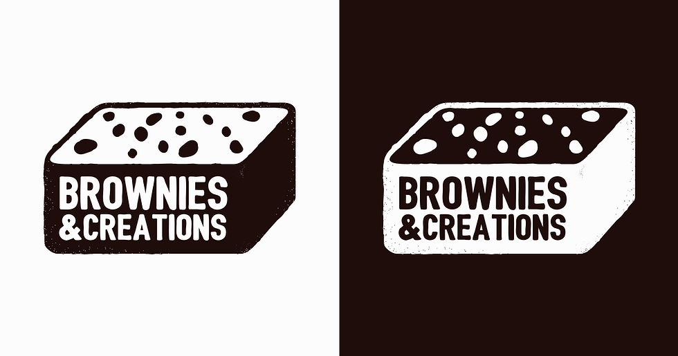

BROWNIES: Because Sometimes the Most Productive Thing You Can Do Is Bake.
The BEST Homemade Brownie recipe!
With crispy edges, fudgy middles, and rich chocolate flavor, these homemade brownies will disappear in no time.

Homemade Brownies recipe
Ingredients:
- 1 cup (2 sticks) unsalted butter
- 2 cups granulated sugar
- 4 large eggs
- 1 teaspoon vanilla extract
- 1 cup all-purpose flour
- 3/4 cup unsweetened cocoa powder
- 1/2 teaspoon salt
- 1/2 teaspoon baking powder
- Optional: 1 cup chopped nuts (such as walnuts or pecans)
- Optional: 1 cup chocolate chips
Instructions:
- Preheat your oven to 350°F (175°C). Grease a 9x13 inch baking pan or line it with parchment paper.
- In a medium saucepan, melt the butter over low heat. Remove from heat once melted.
- Stir in the sugar until well combined. Let the mixture cool slightly.
- Beat in the eggs, one at a time, mixing well after each addition. Stir in the vanilla extract.
- In a separate bowl, sift together the flour, cocoa powder, salt, and baking powder.
- Gradually add the dry ingredients to the wet ingredients, mixing until just combined. Be careful not to overmix.
- If desired, fold in the chopped nuts and chocolate chips until evenly distributed throughout the batter.
- Pour the batter into the prepared baking pan and spread it out evenly.
- Bake in the preheated oven for 25-30 minutes, or until a toothpick inserted into the center comes out with a few moist crumbs. Be careful not to overbake, as you want the brownies to be fudgy.
- Remove from the oven and let the brownies cool in the pan on a wire rack before slicing and serving.
THANK YOU!❤